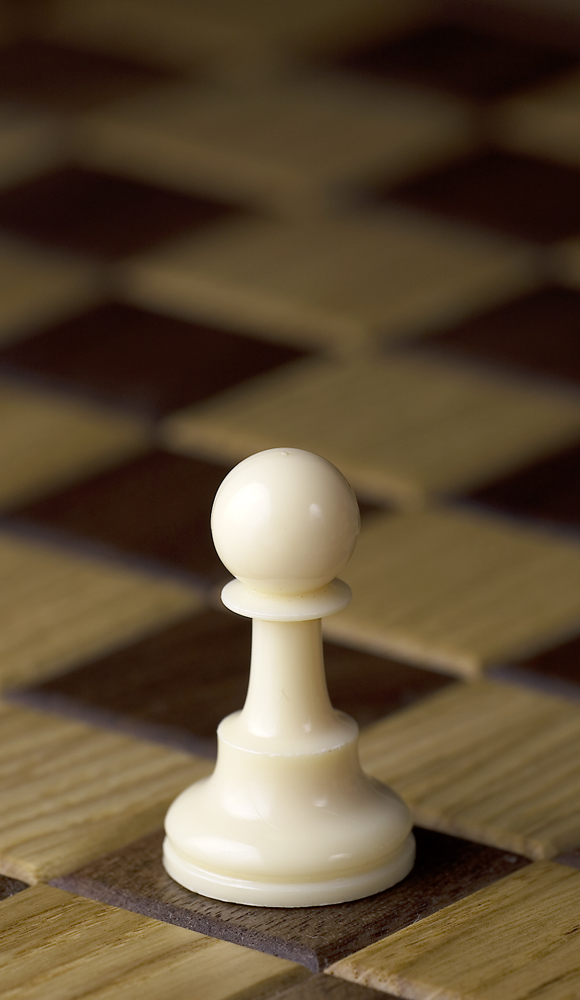

The pawn has been a part of chess since its earliest known origins in India. The original game, **Chaturanga**, had pieces with similar movements to the ones in modern chess. Over time, chess spread to Persia, then to the Islamic world, and finally to Europe. The rules of the game evolved, but the pawn remained a core piece throughout. In medieval European chess, pawns were seen as expendable foot soldiers, yet they held strategic importance in large-scale battles.
The unique ability of pawns to promote to other pieces (usually a queen) makes them central to the dynamics of modern chess. Reaching the opposite side of the board has become a key strategy for many chess players, especially in endgames.
